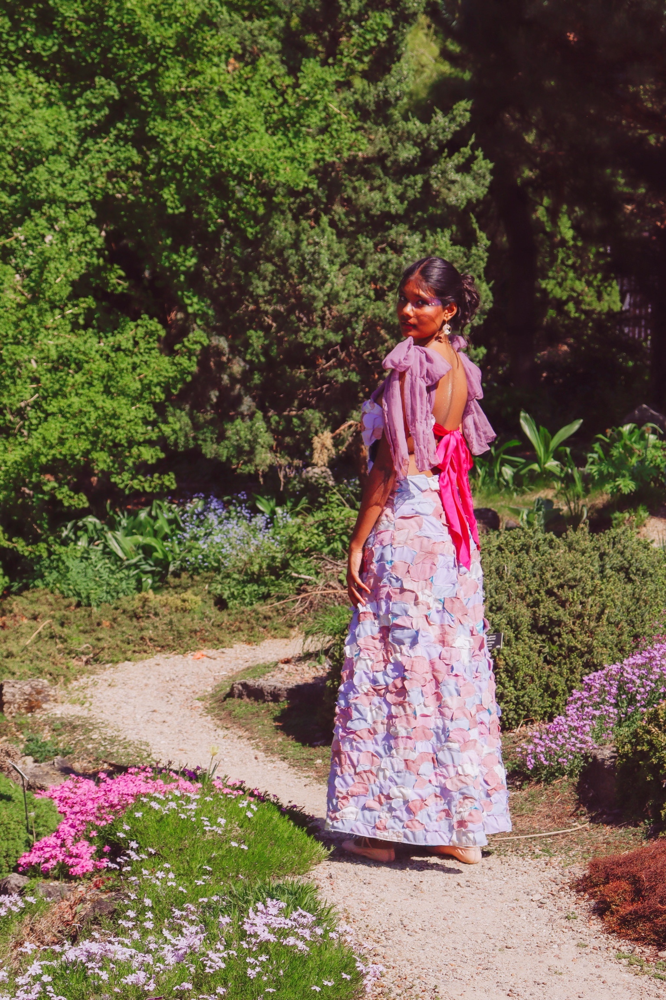
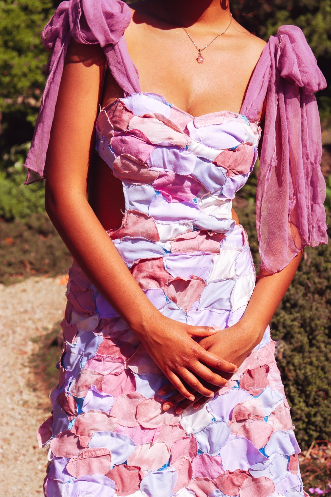
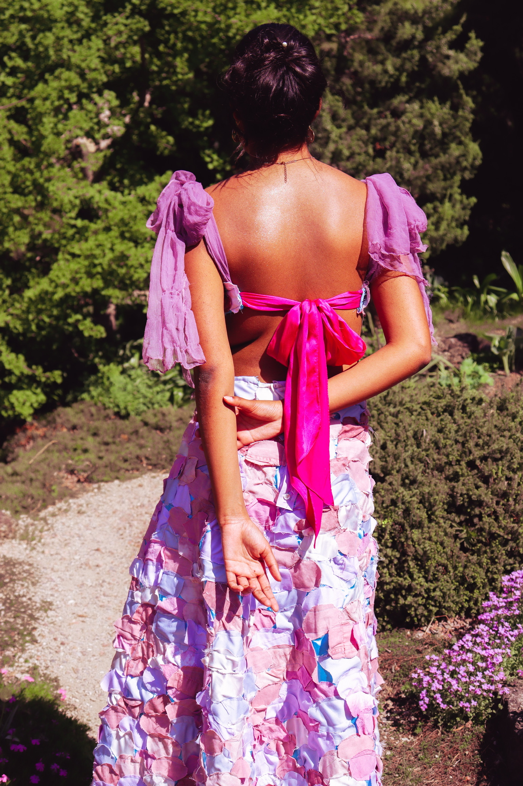

Reimagine
About the Project
- ‘Reimagine’ is 100% sustainable, made completely of thrifted materials, the base being a revamped prom dress.
- Inspired by the work of Monet, curved pieces of shirts, pants, and other materials are cut and patched together to emulate Monet’s style of painting and the beautiful scenes of nature he captured.
- I made sure that the dress was adjustable through the use of ties, giving it the ability to fit more body types.
Materials: Thrifted shirts, pants, and dresses


